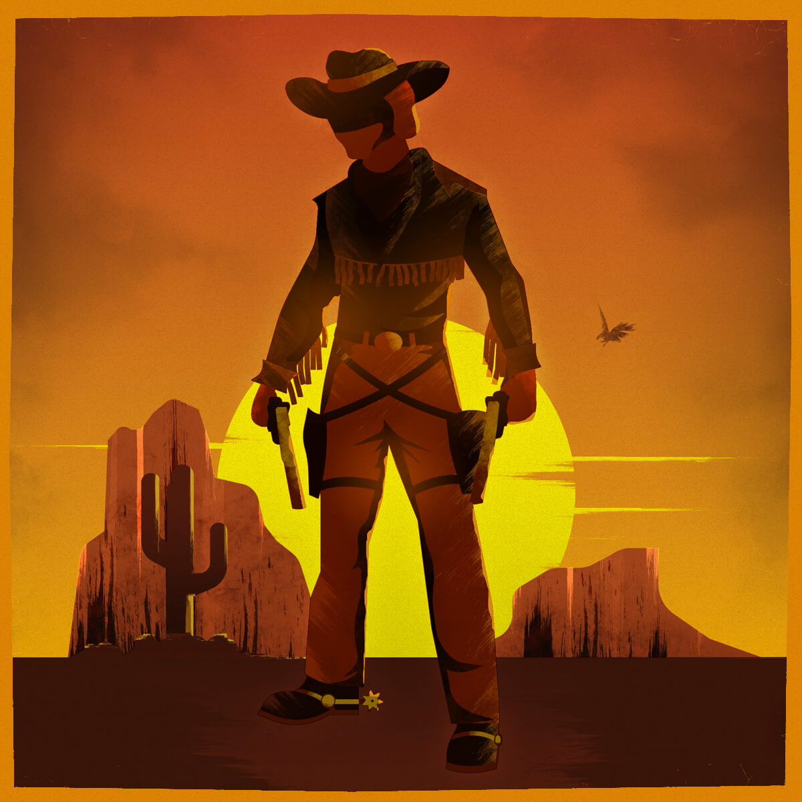

Game Night Series
This series is based on some of my favourite and most memorable Sega Megadrive games. I was hooked on the console as a kid. Games were a lot harder to complete back then, most of my games I never actually completed! Some honourable mentions are The Lion King, Ex-Mutants, Mercs, Speedball 2 and The Terminator.
I have purposely left Sonic out of this series. Even though he is the ultimate Sega character (and the games are amazing), I have chosen to illustrate some of the less popular but still classic games. Enjoy.
Rocket Knight Adventures
This game is a lost classic. I occasionally mention this title to my gaming friends but surprisingly no one seems to know it. This is one of my favourite games of all time. The whole game has a steam punk kind of style, and the enemies are based on pig like characters and robots. The pace of the levels is well blended via various modes of game-play (plat-former, shooter, time-based etc), and the soundtrack is something that will forever be stuck in the back of my mind.
I remember that my brother received this for his birthday. At first I was disappointed because I thought he was going to get Robocop VS Terminator. The disappointment was quickly abolished after my first play. If you’re any kind of game fan, I seriously urge you to check this one out.
The Immortal
THE HARDEST GAME EVER MADE! I mean that in the way that even though it is punishingly difficult, you can’t help but try again. You die, but you keep going back. I suppose it’s the Dark Souls of the 16-bit era. I didn’t actually start playing this game until I was in university and needed it for research. It’s probably a good thing I didn’t play this when I was a kid...it would’ve kept me awake at night!
Fantastic Dizzy
Dizzy is quite the icon in the gaming world. He had a number of games out before this one, but this was the first time I was introduced to the character. It is a platform puzzler that I never completed until I used a guide years later. Anyone remember the mine cart ride?
Zombies (ate my neighbours)
This was another one of my brother’s games. You play the role of Zeke or Julie. Basically, you need to save your neighbours by shooting enemies with your water pistol (other weapons include, tomatoes, fire extinguisher, crucifix, dishes – a wide range of wacky items!). Enemies range from zombies (obviously), aliens, lumberjacks, giant babies, spiders and more!
I think my brother and I got to level 48ish, and could never complete the game. Tons of fun though, especially when you can drink potions to turn you into ‘hulk mode’.

Sunset Riders
Another ridiculously hard game (coming to think of it, maybe I’m just not very good...). I borrowed this game from my cousin, so I wanted to play as much of it as I could before I had to give it back. I didn’t get very far! This is Billy, he was the character I used to play as and my brother would be Cormano (he had the better guns).
I still find this game difficult now, especially on 1 player. The arcade version allowed up to 4 players, I think they’re all needed!
